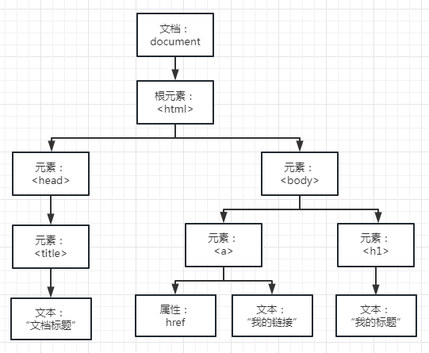

1、DOM简介
1.1、什么是DOM
文档对象模型（Document Object Model，简称DOM），是W3C组织推荐的处理可扩展标记语言（HTML或XML）的标准编程接口。
W3C组织已经定义了一系列的DOM接口，通过这些DOM接口可以改变网页的内容、结构和样式。
1.2、DOM树

- 文档：一个页面就是一个文档，DOM中使用document表示
- 元素：页面中的所有标签都是元素，DOM中使用element表示
- 节点：页面中的所有内容都是节点（标签、属性、文本、注释等），DOM中使用node表示